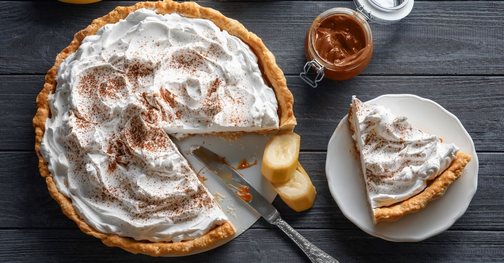

Luscious cream pies are one of the most famous American desserts. Uncomplicated and refreshing, they are usually made with a crunchy bottom crust and a rich, creamy filling, all topped with generous amounts of whipped cream. Nowadays, the bottom is also commonly made with crushed or crumbled cookies and graham crackers.
Meal prep time : 55 minutes
Servings : 10